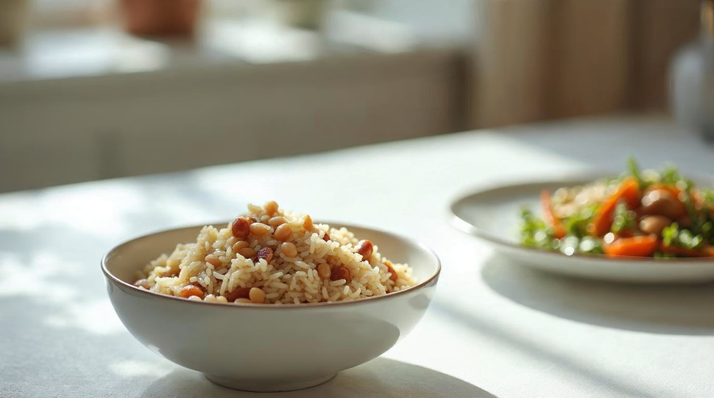
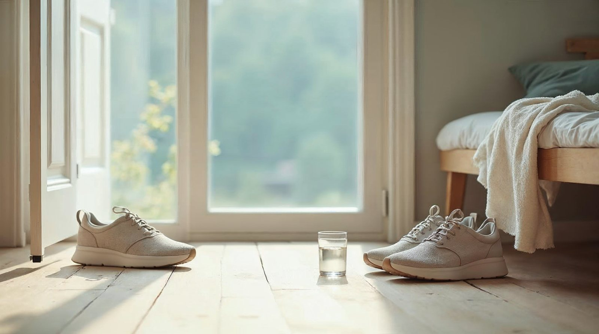
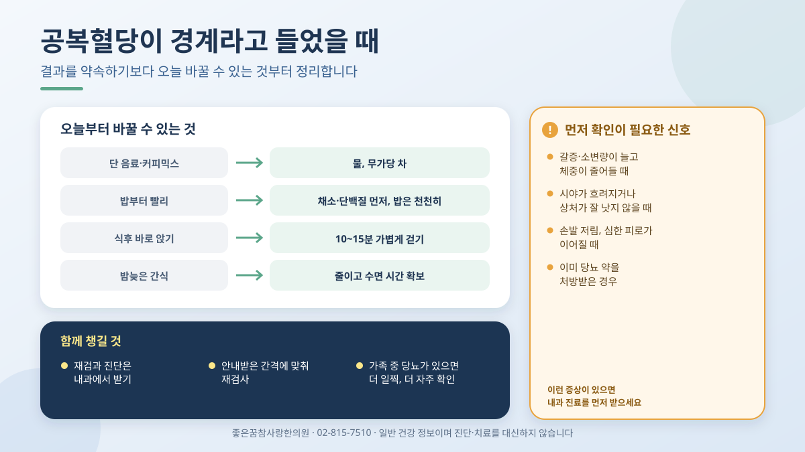

이종호 한의사 감수좋은꿈참사랑한의원 대표원장 (한의사 면허번호 19769)발행 2026-11-23 · 수정 2026-11-26
이 글의 차례
- 왜 이런 불편이 생길 수 있나요
- 먼저 이렇게 여쭙니다
- 일상에서 먼저 해 볼 수 있는 것
- 한의원에서 함께 살필 수 있는 경우
- 예를 들어 이런 경우가 있습니다
- 자주 하는 오해
- 스스로 점검해 보세요
- 얼마나 지켜보고 언제 상담할까요
- 경계와 당뇨는 무엇이 다른가요?
- 왜 식사 순서와 걷기가 혈당과 이어질까요?
- 바쁜 하루 안에서 해 볼 수 있는 것
- 몸이 보내는 신호도 같이 봐요
- 외식과 회식 때는 이렇게 해 보세요
- 가족과 함께 바꾸면 오래가요
- 간식은 이렇게 골라 보세요
- 이렇게 적어 오시면 다음 걸음이 보여요
- 잠과 스트레스도 혈당과 이어져 있어요
- 재검사 전에는 이렇게
- 아침을 거르는 습관도 살펴봐요
- 제가 할 일과 부탁드릴 한 가지
- 처음 오시면 이런 순서로 진료합니다
- 이렇게 기록해 오시면 상담이 쉬워집니다
- 이런 증상은 먼저 확인이 필요합니다
- 관련 글
공복혈당이 정상과 당뇨 사이라는 안내를 받았다면 생활을 점검하기 좋은 때입니다. 결과를 약속하기보다 식사 순서, 단 음료, 식후 걷기, 잠처럼 오늘부터 바꿀 수 있는 것을 정리하고, 재검과 진단은 내과에서 받도록 함께 챙깁니다.
왜 이런 불편이 생길 수 있나요
- 몸에서 혈당을 조절하는 힘이 서서히 떨어지면 공복혈당이 경계 범위에 머물 수 있습니다.
- 뱃살이 늘고 활동이 줄면 혈당 조절이 어려워지는 경향이 있습니다.
- 단 음료와 정제된 탄수화물을 자주 먹는 습관과 관련될 수 있습니다.
- 잠이 부족하거나 스트레스가 많으면 혈당 관리가 어려워질 수 있습니다.
- 가족 중 당뇨가 있으면 혈당이 오르기 쉬운 편이라, 더 일찍 더 자주 확인하는 것이 좋습니다.

먼저 이렇게 여쭙니다
- 검사는 금식 상태에서 받으셨나요?
- 식사 시간과 순서, 단 음료와 간식은 어떤가요?
- 체중 변화와 하루 활동량은 어떤가요?
- 가족 중에 당뇨가 있는 분이 있나요?
- 갈증, 잦은 소변, 피로감이 있나요?
일상에서 먼저 해 볼 수 있는 것
- 단 음료와 커피믹스를 물이나 무가당 차로 바꾸기
- 채소와 단백질을 먼저 먹고 밥은 나중에 천천히 먹기
- 식후 10~15분 가볍게 걷기
- 밤늦은 간식을 줄이고 수면 시간 확보하기
- 병원에서 안내한 간격에 맞춰 재검사 받기
한의원에서 함께 살필 수 있는 경우
- 공복혈당이 경계 수준이라 식사와 활동을 점검하고 싶은 경우 식사 순서와 활동 패턴을 살핍니다.
- 단 음식을 자주 찾고 오후에 쉽게 지치는 경우 식사 간격과 수면을 함께 살핍니다.
- 체중 변화가 함께 있는 경우 생활 전체의 리듬을 살핍니다.
좋은꿈참사랑한의원에서는 모든 분의 맥을 먼저 짚고 검진 결과와 생활 이야기를 충분히 들으며, 결과지의 숫자만이 아니라 설진·복진으로도 지금의 몸 상태를 함께 살핍니다. 첫 방문에서 어떤 순서로 진료하는지는 아래에 따로 적었습니다.
예를 들어 이런 경우가 있습니다
- 예를 들어 야근이 잦아 저녁을 밤 9시 넘어 먹고 바로 잠드는 생활이 이어지는 경우, 저녁 식사 시간을 조금 앞당기고 식사 뒤 10분이라도 걷는 것부터 시작해 볼 수 있습니다.
- 예를 들어 하루에 커피믹스나 단 음료를 서너 잔씩 마시는 경우, 한 번에 다 끊기보다 일주일에 한 잔씩 무가당 차로 바꿔 가는 방법이 이어 가기 쉽습니다.
- 예를 들어 가족 중 당뇨가 있고 최근 뱃살이 늘었다면, 내과에서 안내한 재검사 일정을 먼저 챙기고 인바디 770 같은 체성분 기록으로 생활 변화를 함께 살펴볼 수 있습니다.
자주 하는 오해
- 경계 수준이니 아직 신경 쓰지 않아도 된다고 여기기 쉽지만, 이 시기는 생활을 점검하기 좋은 때이고 재검사 일정도 챙겨 두시면 좋습니다.
- 밥만 줄이면 된다고 생각하는 분이 많지만, 단 음료·간식, 식사 순서, 잠과 활동이 함께 영향을 줄 수 있습니다.
- 과일은 건강식이라 마음껏 먹어도 된다고 여기기도 하지만, 양과 먹는 때에 따라 혈당에 부담이 될 수 있어 한 번에 먹는 양을 정해 두시면 좋습니다.
스스로 점검해 보세요
- 최근 검진 결과지에서 공복혈당과 당화혈색소 수치를 확인했다
- 저녁 식사를 잠들기 3시간 전에 마친다
- 단 음료나 커피믹스를 하루 한 잔 이하로 마신다
- 식사할 때 채소와 단백질을 먼저 먹는 편이다
- 식후 10분 이상 걷는 날이 일주일에 3일 이상이다
- 하루 6~7시간 이상 잔다
- 오후에 단 간식을 찾는 날이 일주일에 며칠인지 안다
- 내과에서 안내한 재검사 시기를 알고 있다
모든 항목을 한 번에 지키려 하기보다 지금 가장 쉬운 한두 가지부터 골라 2주쯤 이어 가 보세요. 무엇을 바꿨고 어떤 날이 어려웠는지 적어 오시면, 다음 진료에서 그 기록을 이어서 보며 다음 단계를 함께 정할 수 있습니다. 혈당 수치의 변화는 내과 재검사 결과로 확인하시면 됩니다.

얼마나 지켜보고 언제 상담할까요
- 식사 순서와 식후 걷기 같은 생활 변화는 최소 2~4주 꾸준히 이어 가며 기록해 보세요.
- 재검사 간격과 진단, 약 처방 여부는 내과의 안내를 따르세요.
- 생활을 바꿔 보았는데 어디서부터 해야 할지 막막하다면 상담을 받아 보셔도 좋습니다.
경계와 당뇨는 무엇이 다른가요?
"당뇨 직전이래요" 하고 걱정스럽게 들어오시는 분들이 많아요. 저는 먼저 숨을 한 번 고르시라고 말씀드려요. 경계라는 건 아직 진단이 아니라 지금 생활을 돌아보기 좋은 때라는 뜻이거든요.
그러니까 사실은, 경계와 당뇨는 두 개가 다른 얘기예요. 진단은 내과에서 정한 기준과 재검사로 하는 거고, 경계는 그 앞에서 몸이 미리 보내는 안내에 가까워요. 이 시기에 무엇을 바꾸는지가 앞으로의 흐름에 영향을 줄 수 있어요.
그래서 저는 이 시기를 겁내기보다 기회로 보자고 말씀드려요. 몸이 아직 크게 무리하지 않았을 때 생활을 조금 옮겨 두면 나중에 크게 바꿔야 하는 부담이 줄어드는 경우가 많거든요.
왜 식사 순서와 걷기가 혈당과 이어질까요?
왜인 줄 아세요? 밥과 빵, 단 음료처럼 빨리 들어오는 당은 혈당을 짧은 시간에 확 올려요. 그러면 몸은 그걸 처리하느라 바빠지고, 이런 일이 하루에도 여러 번 반복되면 조절하는 힘이 조금씩 지치는 거예요.
저는 이걸 출근길 지하철에 비유해요. 사람이 한꺼번에 몰리면 개찰구가 막히잖아요. 채소와 단백질을 먼저 먹고 밥을 나중에 먹는 건 사람을 나눠서 들여보내는 거예요. 같은 양이 들어와도 개찰구가 덜 붐비는 거죠.
식후에 가볍게 걷는 것도 같은 이유예요. 근육이 움직이면 들어온 당을 쓰는 쪽으로 가져가거든요. 세게 걸으실 필요 없어요. 최대한 천천히, 대신 자주 하시는 게 좋아요.
바쁜 하루 안에서 해 볼 수 있는 것
예를 들어 점심을 회사 근처에서 급하게 드시는 경우, 국밥이나 면 한 그릇으로 끝내기보다 반찬부터 몇 숟가락 드시고 밥을 나중에 드시는 순서만 바꿔 보세요. 메뉴를 바꾸지 않아도 순서는 바꿀 수 있거든요.
예를 들어 오후 서너 시만 되면 단 것이 당기는 경우, 점심과 저녁 사이 공백이 너무 긴 걸 수 있어요. 이럴 때는 참기보다 견과류 한 줌이나 삶은 달걀처럼 가벼운 걸 미리 챙겨 두는 쪽이 저녁 과식을 줄이는 데 도움이 될 수 있어요.
예를 들어 밤잠이 짧은 시기라면 그것도 혈당 관리에 영향을 줄 수 있어요. 잠이 모자란 날엔 단 것이 더 당기는 경우가 많거든요. 잠이 보약이에요. 식사만큼 잠도 같이 챙겨 주세요.
몸이 보내는 신호도 같이 봐요
공복혈당은 숫자로만 보이지만, 생활 속에서 몸이 보내는 신호도 있어요. 점심 먹고 나면 눈꺼풀이 무거워지고, 오후 서너 시만 되면 단 것이 당기고, 저녁엔 손발이 무겁다는 말씀을 자주 들어요.
이런 신호가 있다고 해서 혈당 때문이라고 단정할 수는 없어요. 다만 식사 순서와 간격을 바꾼 뒤 이런 느낌이 어떻게 달라지는지 같이 적어 보시면, 내 몸에 맞는 방법을 찾는 단서가 돼요. 숫자는 내과 재검사로, 느낌은 기록으로 같이 보는 거예요.
외식과 회식 때는 이렇게 해 보세요
바쁜 분들께 "집밥 드세요"는 지키기 어려운 숙제예요. 그래서 밖에서 먹을 때 쓸 수 있는 요령을 말씀드려요.
- 고기 집에서는 쌈 채소와 고기를 먼저 드시고, 마지막 공깃밥이나 냉면은 반만
- 한식 백반은 나물과 생선부터, 밥은 나중에
- 분식이나 면 요리라면 김밥 한 줄보다 반 줄과 달걀 하나처럼 단백질을 더하기
- 회식 자리에선 단 음료나 주스 대신 물이나 무가당 차를 옆에 두기
- 디저트는 아예 끊기보다 여럿이 나눠 한두 입만
이 중에 전부가 아니라 하나만 골라 보세요. 매번 다 지키려고 하면 외식 자리가 부담이 되고, 그러면 오래가기 어렵거든요.
가족과 함께 바꾸면 오래가요
가족 중 당뇨가 있는 분은 식탁도 비슷한 경우가 많아요. 혼자만 반찬을 먼저 먹고 밥을 줄이려고 하면 외롭고 오래가기 어려워요.
예를 들어 식탁에 나물이나 채소 반찬을 한 가지 더 올리고, 단 음료 대신 보리차를 냉장고에 두는 것처럼 집 안의 환경을 바꾸면 가족 모두가 자연스럽게 따라오기 쉬워요. 저녁 먹고 가족이 함께 동네를 한 바퀴 도는 것도 좋은 방법이에요.
간식은 이렇게 골라 보세요
간식을 아예 끊으라고 하면 오후에 버티다가 저녁에 몰아 먹게 되기 쉬워요. 그래서 끊기보다 고르는 쪽을 권해요.
- 과자나 빵 대신 견과류 한 줌, 삶은 달걀, 무가당 요거트
- 과일은 한 번에 먹을 양을 정해 두고, 주스보다 통째로
- 단 음료는 탄산수나 보리차로
- 사무실 책상 서랍에 단 간식을 쌓아 두지 않기
간식을 드실 때도 배가 고픈지 한 번만 물어보세요. 심심하거나 피곤해서 손이 가는 경우가 생각보다 많거든요.
이렇게 적어 오시면 다음 걸음이 보여요
혈당 수치는 재검사 때나 확인할 수 있지만, 생활은 매일 적을 수 있어요. 일주일만 이런 식으로 적어 보세요.
- 아침·점심·저녁 먹은 시각과 먹은 순서(채소 먼저였는지)
- 오후에 단 것이 당긴 시각과 그때 먹은 것
- 식후에 걸었는지, 몇 분쯤이었는지
- 잠든 시각과 아침 개운함
이 기록을 보면 어느 끼니가 가장 흔들리는지, 어느 날 단 것이 더 당기는지가 보여요. 그걸 보고 다음에 바꿀 하나를 같이 정해요.
잠과 스트레스도 혈당과 이어져 있어요
식사는 똑같은데 바쁜 시기에 혈당이 더 높게 나왔다는 분들이 있어요. 원래 그럴 수 있어요. 긴장이 이어지면 몸은 위기에 대비하느라 혈당을 올려 두는 쪽으로 기울고, 잠이 모자라면 혈당을 조절하는 힘도 같이 지치는 경향이 있거든요.
그래서 저는 식사와 함께 잠과 긴장을 꼭 같이 여쭤봐요. 스트레스를 없애라는 게 아니라, 잠드는 시각을 조금 앞당기고 하루 중 잠깐씩 숨 돌리는 틈을 만드는 것부터 같이 해 보는 거예요.
재검사 전에는 이렇게
재검사를 앞두고 며칠만 갑자기 굶거나 식사를 확 바꾸면 숫자는 잠깐 좋아 보일 수 있어도 평소의 내 몸을 보여 주지는 못해요. 검진 기관에서 안내한 금식 조건을 지키고, 전날 술과 늦은 야식만 피하면서 평소처럼 지내다 받는 게 가장 솔직한 결과예요.
아침을 거르는 습관도 살펴봐요
아침을 거르고 점심을 늦게, 많이 드시는 분들이 많아요. 공백이 너무 길어지면 그다음 끼니에 몸이 한꺼번에 받아들이느라 혈당이 크게 출렁이기 쉬워요. 아침을 거창하게 드실 필요는 없어요. 달걀 하나, 우유 한 잔, 두부 한 조각처럼 가볍게라도 드시면 점심 과식을 줄이는 데 도움이 될 수 있어요.
혈당은 하루 이틀로 판단하기보다 몇 달의 흐름으로 보는 거예요. 그래서 조급해하지 마시고, 지킬 수 있는 것 하나를 오래 이어 가는 쪽을 권해요.
바쁜 날엔 누구나 끼니가 들쭉날쭉해지기 쉬워요. 그래서 완벽한 식단보다 끼니 사이 공백을 비슷하게 두는 것 하나를 먼저 권해요.
제가 할 일과 부탁드릴 한 가지
맥을 짚고 결과지와 생활을 같이 본 뒤 먼저 바꿀 것을 정하고, 필요하다고 판단되면 원내 당화혈색소 검사기로 흐름을 같이 확인하는 건 제가 할게요. 혈당약을 드시고 계시면 처방한 의사와 상의 없이 줄이거나 끊지 않아요.
부탁드릴 건 하나예요. 한 끼에 채소부터 먼저 드시기. 다른 건 하시던 대로 편하게 하셔도 괜찮아요. 하나가 몸에 붙으면 그다음 걸음은 같이 정하면 돼요. 재검사 시기는 내과의 안내를 따르시고, 그사이 기록을 가져오시면 이어서 볼게요.
처음 오시면 이런 순서로 진료합니다
첫 방문에서는 모든 분께 그렇듯 맥부터 짚고(진맥), 검진 결과지와 이전 결과를 함께 보며 식사 시간과 음료, 잠, 활동 이야기를 듣습니다. 이어서 필요하다고 판단될 때 당화혈색소 검사기나 혈액 검사기, 인바디 770으로 지금의 흐름을 함께 확인합니다.
그 뒤 식사 순서와 식후 걷기처럼 먼저 바꿀 것의 순서를 정하고, 침·한약 상담은 복용 중인 약을 확인한 뒤 정합니다. 진단과 약 처방은 내과에서 받도록 안내하며, 다음 진료에서는 지난번 정한 것을 어떻게 지내셨는지 이어서 여쭙습니다.
이렇게 기록해 오시면 상담이 쉬워집니다
- 최근 건강검진 결과지와 이전 결과
- 하루 식사 시간과 자주 먹는 음료·간식
- 식후 활동(걷기 시간 등)
- 가족력과 복용 중인 약
이런 증상은 먼저 확인이 필요합니다
- 갈증과 소변량이 부쩍 늘고 체중이 줄어드는 경우
- 시야가 흐려지거나 상처가 잘 낫지 않는 경우
이런 신호가 있으면 한의원보다 가까운 병원이나 응급실을 먼저 찾으세요.
관련 글

여쭙는 것
- 검사는 금식 상태에서 받으셨나요?
- 식사 시간과 순서, 단 음료와 간식은 어떤가요?
- 체중 변화와 하루 활동량은 어떤가요?
생활에서 해 볼 것
- 단 음료와 커피믹스를 물이나 무가당 차로 바꾸기
- 채소와 단백질을 먼저 먹고 밥은 나중에 천천히 먹기
- 식후 10~15분 가볍게 걷기
한의원에서 함께 살필 것
- 공복혈당이 경계 수준이라 식사와 활동을 점검하고 싶은 경우 식사 순서와 활동 패턴을…
- 단 음식을 자주 찾고 오후에 쉽게 지치는 경우 식사 간격과 수면을 함께 살핍니다.
- 체중 변화가 함께 있는 경우 생활 전체의 리듬을 살핍니다.
먼저 확인이 필요한 신호
- 갈증과 소변량이 부쩍 늘고 체중이 줄어드는 경우
- 시야가 흐려지거나 상처가 잘 낫지 않는 경우
한눈에 보는 표
| 구분 | 핵심 |
|---|---|
| 여쭙는 것 | 검사는 금식 상태에서 받으셨나요? 식사 시간과 순서, 단 음료와 간식은 어떤가요? |
| 생활에서 해 볼 것 | 단 음료와 커피믹스를 물이나 무가당 차로 바꾸기 채소와 단백질을 먼저 먹고 밥은 나중에 천천히 먹기 |
| 한의원에서 함께 살필 것 | 공복혈당이 경계 수준이라 식사와 활동을 점검하고 싶은 경우 식사 순서와 활동 패턴을 살핍니다. 단 음식을 자주 찾고 오후에 쉽게 지치는 경우 식사 간격과 수면을 함께 살핍니다. |
| 먼저 확인이 필요한 신호 | 갈증과 소변량이 부쩍 늘고 체중이 줄어드는 경우 시야가 흐려지거나 상처가 잘 낫지 않는 경우 |
자주 묻는 질문
경계라고 하면 약을 먹어야 하나요?
의사의 판단이 필요합니다. 한의원에서는 생활 리듬을 함께 살피고 내과 진료와 재검사를 안내합니다.
한의원 진료로 혈당이 떨어지나요?
수치 개선을 약속하지 않습니다. 식사·활동·잠 같은 생활과 몸 상태를 함께 살핍니다.
당화혈색소는 무엇인가요?
최근 2~3개월의 평균적인 혈당 흐름을 반영하는 수치입니다. 필요하다고 판단될 때 확인하며 해석과 진단은 내과를 따릅니다.
좋은꿈참사랑한의원은 재진 때 지난번 이야기부터 이어서 여쭙니다. 진료시간과 예약은 오시는 길에서 확인하세요.
어디서 상담받을 수 있나요?
좋은꿈참사랑한의원은 서울 동작구 만양로2길 2 신성빌딩 3층·5층(서울 동작구 상도동, 7호선 상도역 3번 출구 근처)에 있습니다. 한의사 3명(이종호 대표원장, 조영기 수석진료원장, 정원영 진료원장)이 진료합니다. 진료시간은 평일 09:30~20:00(점심 13:00~14:00), 토·일·공휴일 09:30~15:00이며, 방문 전 전화로 확인을 권합니다. 예약은 네이버 예약, 카카오톡 상담, 전화 02-815-7510로 받습니다.
이 글은 일반적인 건강 정보이며 개인의 진단이나 치료를 대신하지 않습니다. 증상이 있거나 복용 중인 약이 있다면 진료를 통해 확인하세요. 치료 효과는 개인마다 다를 수 있습니다.
작성 기준: 일반적으로 알려져 있는 건강 정보를 참고해 정리했습니다(대표원장 감수). 증상 기록은 1~2주 동안 하루 1회, 비슷한 시간에 적어 오시면 지난 상태와 비교하기 쉽습니다.